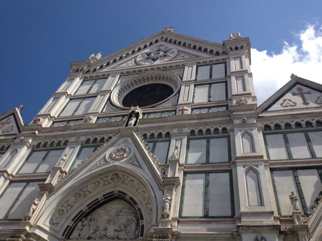

Facade of the Basilica Santa Maria Novella. The name of Giovanni Rucellai, a patron for the church, can be seen near the top.
The Basilica Santa Maria Novella was one of two principle religious centers in Florence in the middle ages. The church is mathematically balanced, build as a series of squares broken into smaller squares. There are several Gothic features as well, including Italian Gothic arches and tombs underneath the floors. The main doors to the church are an exact replica to the doors to the Pantheon.
An image of a sail, a symbol of the Rucellai family.
The Altar of Santa Maria Novella.
Frescos behind the altar depicting scenes from the Bible. Painted by Domenico Ghirlandaio.
Stained glass from Santa Maria Novella.
"The Holy Trinity" by Masaccio, considered to be the first true perspective painting.
Palazzo Davanzati
Palazzo Davanzati. The iron bars across the front would have been used to hang large banners, and possibly caged birds.
The Palazzo Davanzati is a Medieval Palazzo that was owned by a textile merchant and served as the offices and residence for members of the Davanzati family. When it was built, it replaced one of many towers, which were torn down at the same time.
An interesting note about the Palazzo was that it was designed to be defensive. Doors were designed to be barricaded, windows were designed to pour boiling oil out of, and courtyards were designed to provide water in case of a siege. These precautions seem extreme now, but they serve to remind us of the reality of the warfare that routinely occurred in Florence in Medieval times.
A lion used to decorate a bannister in Palazzo Davanzati.
A room in Davanzati palace with decorated walls.
Four poster bed.
Florence city center
The Palazzo Vecchio.
Florence, seen from the tower of the Palazzo Vecchio.
The Center of Florence could be considered the Piazza della Signoria. This is the central square in front of the Palazzo Vecchio, a building that was once a private residence but which was taken by the city for public use. The tower of the Palazzo Vecchio is taller than any other in the city. Nearby can be found the Galleria degli Uffizi, famous for its collection of sculptures.
Sketch of the Ponte Vecchio
The Ponte Vecchio is a well known bridge that has existed since antiquity. The map room in the Palazzo Vecchio contains a secret passage that goes over the bridge, which was used by the Medici several times to escape from the city. The bridge in the present day is home to many jewelry stores.
Basilica di Santa Croce
The main nave of the Basilica of Santa Croce. The large space is the result of influence during the counter reformation, which heavily emphasized preaching.

Facade of the Basilica of Santa Croce
Sketch of the bell tower of Santa Croce
The Basilica of Santa Croce is a Franciscan Gothic cathedral built during the counter reformation. Many famous Italians are buried here, including Michelangelo, Dante, Machiavelli, and Galileo.